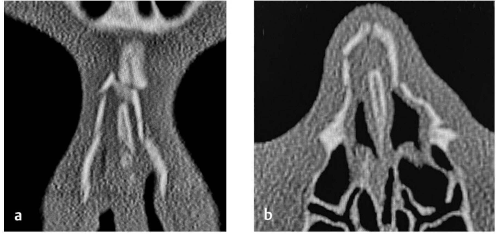

Сверка с PDF рубрикатора выполняется…
Травма носа
Клинические рекомендации от 20.11.2024 · взрослые и дети
Основные положения
- Для выявления перелома костей носа взрослым и детям с 3 лет выполняют рентгенографию костей лицевого скелета в боковой проекции. Чувствительность метода не превышает 70%, поэтому отсутствие изменений на рентгенограмме не исключает перелома.
- При гематоме или абсцессе перегородки носа показаны вскрытие и дренирование с последующей передней тампонадой и ежедневными перевязками до прекращения отделяемого.
- При травматической деформации носа показаны репозиция костей и фиксация отломков:
- ранняя операция в первые 7 суток;
- при тяжёлом состоянии или выраженном отёке вмешательство может быть отложено до 15 суток.
- При изолированном переломе, в том числе открытом, рутинное назначение системных антибиотиков не показано. Показания к антибактериальной терапии:
- загрязнённые и гнойные раны;
- выраженный отёчно-токсический синдром;
- осложнённая гематома или абсцесс перегородки носа;
- сочетанная и комбинированная травма;
- тяжёлая сопутствующая патология.
- При повреждении кожи или слизистой оболочки и загрязнении раны землёй необходима экстренная профилактика столбняка в максимально ранние сроки, но не позднее 20-го дня после травмы.
- Показания к госпитализации:
- тяжёлое состояние;
- выраженный отёк;
- кровотечение;
- выраженный болевой синдром;
- комбинированные переломы костей и перегородки носа с повреждением околоносовых пазух и ранениями лица;
- травматическая деформация носа со смещением перегородки или нарушением дыхания;
- тяжёлая сопутствующая патология;
- приём антикоагулянтов или антиагрегантов;
- осложнения: гематома и абсцесс перегородки носа, воспаление околоносовых пазух и соседних областей;
- необходимость закрытой репозиции.
Клиническая картина и классификация
Определения
Травма носа представляет собой повреждение носа в результате прямого или опосредованного воздействия травмирующего фактора снаружи или изнутри, сопровождающееся нарушением целостности тканей и структур наружного носа и полости носа и нарушением функций носа.
Поверхностной называется травма наружного носа без повреждения кожи, костей носа и слизистой оболочки полости носа и без неврологической симптоматики.
Ушиб носа является закрытым повреждением тупым предметом без видимого нарушения целостности кожи и слизистых оболочек, с разрывом мелких сосудов и кровоизлиянием. При кровоподтёке кровь пропитывает мягкие ткани наружного носа, тогда как гематома представляет собой скопление крови в ограниченной полости. Ссадиной называется повреждение поверхностного слоя кожи с визуально определяемым местом размозжения кожных сосудов.
Перелом костей носа (ПКН) характеризуется частичным или полным нарушением целостности носовых костей, лобных отростков верхней челюсти, перегородки носа или носовой ости. Перелом считается закрытым при сохранённой целостности кожи носа и открытым, если отломки сообщаются с внешней средой через рану.
Раной носа называется повреждение кожи наружного носа на всю глубину, часто с обнажением хрящей и костей и более глубоких структур полости носа, в ряде случаев с отрывом крыла или кончика носа.
Механизм травмы
При ударе во фронтальной плоскости возникает перелом носовых костей с западением спинки носа. Боковой удар может приводить к разъединению носовой кости и лобного отростка верхней челюсти с формированием сколиоза наружного носа, однако чаще линия перелома проходит выше шва между ними. Как правило, одновременно возникает перелом перегородки носа, чаще её хрящевого отдела.
У детей младшего возраста кости наружного носа эластичны, поэтому переломы встречаются редко, а гематома и абсцесс перегородки носа чаще.
При переломе нередко происходит разрыв и отслойка надхрящницы или надкостницы перегородки, кровь скапливается между хрящом и надхрящницей, и формируется гематома перегородки носа. При её инфицировании развивается абсцесс, четырёхугольный хрящ расплавляется, что приводит к деформации носа и нарушению его функций.
Травма носа может быть изолированной или сочетаться с повреждением околоносовых пазух, глаза, скуловой области, нижней челюсти, полости рта, ушной раковины, сотрясением или ушибом головного мозга.
Классификация
Общепринятая классификация переломов отсутствует. Согласно классификации Ю. Н. Волкова (1958), выделяют открытые и закрытые переломы, переломы без деформации и с деформацией наружного носа.
Согласно классификации С. Б. Бесшапочного (1984), переломы подразделяются на переломы без деформации и с деформацией наружного носа; последние могут быть одно- и двусторонними, с боковым смещением отломков, со смещением кзади или с сочетанием обоих видов смещения.
Согласно классификации А. С. Лопатина (2019), выделяют изолированные и сочетанные, открытые и закрытые переломы; переломы со смещением подразделяются по направлению удара на латеральные, фронтальные, фронтолатеральные и базальные.
- изолированные: с деформацией наружного носа или без неё;
- комбинированные: с травмой кожи лица, внутриносовых структур или околоносовых пазух;
- сочетанные: с челюстно-лицевой или черепно-мозговой травмой, травмой конечностей, туловища и внутренних органов.
- острая стадия: первые 14 дней; кости репонируют по стандартной методике;
- застарелый перелом: от двух недель до двух месяцев; репозиция возможна только в сочетании с операцией на перегородке носа;
- стойкая деформация: давность травмы более двух месяцев; сопоставление отломков возможно только после остеотомии.
Клиническая картина
Поверхностная травма характеризуется слабо выраженными проявлениями: в месте удара отмечаются боль, небольшая припухлость и умеренная гиперемия кожи без нарушения её целостности.
- ушиб: пирамида носа увеличена в объёме, контуры сглажены за счёт отёка;
- кровоподтёк и ссадина: изменены цвет и целостность кожи;
- перелом: пирамида носа смещена в сторону или вдавлена;
- гематома: перегородка носа утолщена, носовые ходы сужены.
- носовое кровотечение;
- боль и болезненность при пальпации;
- нарушение дыхания и обоняния.
- отёки, кровоподтёки, гематомы и раны других областей;
- нарушения зрения и сознания.
- отёк;
- боль;
- деформация наружного носа;
- крепитация и подвижность отломков;
- носовое кровотечение;
- затруднение носового дыхания.
У детей с переломом деформация носа вследствие выраженного отёка определяется лишь в 57,5% случаев. Кроме того, у 7,4% детей деформация имелась до травмы.
При переломе нередко повреждены кожа носа и слизистая оболочка полости носа, возможны эмфизема мягких тканей носа и лица, экхимозы. Носовое кровотечение встречается часто, однако при неосложнённом изолированном переломе обильное и рецидивирующее кровотечение отмечается редко.
Перелом часто сопровождается кровоизлиянием в веки и мягкие ткани орбиты («симптом очков»), однако этот же симптом наблюдается при переломе переднего основания черепа и травме кавернозного синуса.
Крепитация и подвижность отломков выявляются менее чем в половине случаев, поэтому их отсутствие не исключает перелома. Болевой синдром в области носа также неспецифичен и встречается при ушибах и воспалительных заболеваниях носа.
Жалобы и анамнез
- обстоятельства и механизм травмы, направление удара;
- потерю сознания;
- перенесённые ранее травмы носа с деформацией и операции на носу;
- прививочный анамнез в отношении столбняка при комбинированной травме с повреждением кожи.
При общем осмотре оценивают артериальное давление, пульс и частоту дыхания.
Скрыто: определения ушиба, кровоподтёка, ссадины и раны, механизм перелома, классификации Бесшапочного и Лопатина.
В учебнике: травмы и инородные тела носа и околоносовых пазух. Анатомия и физиология: нос, околоносовые пазухи.
Диагностика
- факт травмы со слов пострадавшего или очевидцев;
- жалобы на боль, изменение формы носа, затруднение дыхания, кровотечение, нарушение обоняния;
- данные осмотра: повреждения кожи, деформация, крепитация и подвижность отломков, кровотечение.
- рентгенография костей лицевого скелета, при противопоказаниях ультразвуковое исследование (УЗИ) костей носа;
- при сочетанной травме рентгенография черепа и компьютерная томография (КТ) для выявления повреждений околоносовых пазух, орбиты, скуловой кости, верхней челюсти и черепа.
Физикальное обследование: осмотр и пальпация
- осмотр оториноларинголога: определение характера и выраженности повреждений;
- пальпация челюстно-лицевой области.
- отёк, гематомы, ссадины и раны;
- наличие и выраженность деформации;
- крепитация отломков;
- подкожная эмфизема и гематома;
- состояние области носового клапана, подвижность крыльев носа и подвижной части перегородки.
Для врачебной и судебно-медицинской экспертизы важна фотофиксация повреждений.
Коагулограмма
- травма, сопровождающаяся кровотечением: оценка системы гемостаза и кровопотери, подготовка к возможному хирургическому вмешательству.
Рентгенография костей лицевого скелета
- взрослые и дети с 3 лет: выявление костных повреждений.
Рентгенограмма в боковой проекции имеет как диагностическое, так и юридическое значение: в 70,2% случаев она позволяет выявить перелом и характер смещения отломков.
Как правило, повреждаются обе носовые кости, однако встречаются одиночные и множественные переломы, поэтому для уточнения стороны перелома боковые снимки выполняют в положении головы на левой и на правой стороне.
- чувствительность при переломе костей носа не превышает 70%;
- смещение во фронтальной плоскости на боковом снимке не визуализируется;
- у детей до 3 лет исследование малоинформативно вследствие слабой оссификации и преобладания хрящевой ткани.
Поэтому отрицательный результат не исключает перелома.
Рентгенография околоносовых пазух
- подозрение на смещение отломков в переднезаднем направлении при отсутствии изменений на боковом снимке (взрослые и дети с 3 лет).
Компьютерная томография
КТ лицевого отдела черепа или челюстно-лицевой области и (или) КТ головного мозга.
- комбинированные и сочетанные переломы;
- признаки черепно-мозговой травмы (ЧМТ);
- неинформативность рентгенографии при клинических признаках перелома;
- планирование расширенного вмешательства;
- подозрение на назальную ликворею;
- тяжёлое состояние;
- продолжающееся или рецидивирующее носовое кровотечение.
Область исследования определяется сопутствующей патологией.
- чувствительность КТ при переломе приближается к 100%;
- спиральное сканирование, толщина среза 3 мм;
- оценивают положение отломков, состояние перегородки носа, повреждения околоносовых пазух, орбиты, мозгового черепа, мягких тканей и головного мозга;
- перед операцией рекомендуется 3D-реконструкция.
Оскольчатый перелом костей носа на КТ

Ультразвуковое исследование костей носа
- противопоказания к лучевым методам;
- контроль репозиции и сращения отломков (исследование можно повторять).
Электрокардиография
- травма носа с массивным кровотечением;
- сочетанная травма носа.
Консультации специалистов
- офтальмолог: подозрение на повреждение органа зрения;
- невролог: все пациенты с травмой носа, для своевременного выявления сопутствующей патологии.
Лечение
Консервативное лечение направлено на уменьшение болевого синдрома и отёка, профилактику бактериального воспаления в зоне повреждения, ускорение заживления и восстановление функций носа.
Обезболивание
Всем пациентам при отсутствии противопоказаний назначаются анальгетики.
Выраженный болевой синдром и травматический стресс способствуют развитию или утяжелению травматического шока.Применяют анальгетики-антипиретики и нестероидные противовоспалительные препараты (НПВП) по отдельности или в сочетании; у взрослых и детей, в том числе в послеоперационном периоде, рекомендуется сочетание НПВП с парацетамолом, а также метамизол натрия.
НПВП у детей- ибупрофен: с 3 месяцев;
- кетопрофен: с 15 лет;
- кетопрофен в гранулах для приготовления раствора: с 6 лет.
Метамизол натрия детям амбулаторно не назначают; в стационаре только при отсутствии других разрешённых детям анальгетиков (риск серьёзных нежелательных явлений).
Анальгетики у взрослых таблица 2 в тексте КР
| Препарат | Разовая доза | Интервал | Максимум в сутки | Длительность |
|---|---|---|---|---|
| Парацетамол | 1 г внутривенно, инфузия 15 минут | 4 ч | 4 г | 5–7 суток |
| Диклофенак | 75 мг внутримышечно (в таблице рекомендации указано «75 мл») | 12 ч | 150 мг | 2 суток |
| Кеторолак | 30 мг внутривенно, внутримышечно | 6 ч | 60–90 мг | 2 суток |
| Кетопрофен | 100 мг внутривенно, внутримышечно | 12 ч | 200 мг | не более 2 суток |
| Лорноксикам | 8 мг внутривенно, внутримышечно | 12 ч | 16 мг | 1–7 суток |
| Декскетопрофен | 50 мг внутривенно, внутримышечно | 8–12 ч | 150 мг | 2 суток |
| Метамизол натрия | 500–1000 мг внутривенно, внутримышечно | 8–12 ч | 2 г | 1–5 суток |
Анальгетики у детей таблица 3 в тексте КР
- масса тела менее 10 кг: 7,5 мг/кг, не более 30 мг/кг в сутки;
- масса тела 10–50 кг: 15 мг/кг, не более 60 мг/кг в сутки, но не более 2 г (для 33–50 кг в той же ячейке таблицы указано не более 3 г);
- масса тела более 50 кг: 1000 мг, не более 4 г в сутки;
- длительность: 5–7 суток.
- доза: 10–15 мг/кг, не более 60 мг/кг в сутки;
- длительность: 3–5 суток.
- 3–12 месяцев: 50–100 мг;
- 1–3 года: 100–150 мг;
- 3–5 лет: 150–200 мг;
- 5–10 лет: 250–350 мг;
- 10–14 лет: 350–500 мг;
- длительность: до 5 суток.
- 3–6 месяцев: 50 мг, не более 150 мг в сутки;
- 6–12 месяцев: 50 мг, не более 200 мг в сутки;
- 1–3 года: 100 мг, не более 300 мг в сутки;
- 4–6 лет: 150 мг, не более 450 мг в сутки;
- 6–12 лет: 200–400 мг, не более 800 мг в сутки;
- 12–17 лет: 200–400 мг, не более 1 г в сутки;
- длительность: 4 суток.
- 3–9 месяцев: 60 мг каждые 8 часов, не более 180 мг в сутки;
- 9–24 месяца: 60 мг каждые 6 часов, не более 240 мг в сутки;
- длительность: не более 3 суток.
- с 15 лет: 500–1000 мг внутривенно, внутримышечно, не более 2 г в сутки, 1–5 суток;
- 2–14 лет: 50–100 мг/кг внутримышечно, внутривенно, 3 суток;
- от 3 месяцев до года: 50–100 мг на 10 кг внутримышечно, 3 суток.
Профилактика столбняка и антибактериальная терапия
Вакцина для профилактики столбняка показана при повреждении кожи или слизистой оболочки, если:
- травма получена при ударе о землю;
- в рану попала почва.
Экстренную профилактику выполняют в максимально ранние сроки, вплоть до 20-го дня после травмы, с учётом инкубационного периода столбняка.
Экстренная профилактика включает- первичную хирургическую обработку раны;
- одновременное введение столбнячного анатоксина, противостолбнячного иммуноглобулина человека или столбнячного антитоксина в соответствии с инструкцией.
При изолированном переломе костей носа, в том числе открытом, рутинное назначение системных антибиотиков до и после операции не рекомендуется.
Профилактическое применение антибиотиков не снижает риск инфекционных осложнений после репозиции костей носа ни у взрослых, ни у детей.Показания к системным антибиотикам
- загрязнённые и гнойные раны кожи и слизистой оболочки;
- выраженный отёчно-токсический синдром;
- осложнённая гематома или абсцесс перегородки носа;
- сочетанная и комбинированная травма;
- тяжёлая сопутствующая патология.
При явном бактериальном воспалении или высоком риске его развития применяют бета-лактамы широкого спектра действия:
- цефазолин;
- цефтриаксон;
- ампициллин с сульбактамом;
- амоксициллин с клавулановой кислотой.
При аллергии на бета-лактамы применяют клиндамицин.
| Препарат | Доза |
|---|---|
| Ампициллин и сульбактам | Внутримышечно и внутривенно. Взрослым в зависимости от тяжести инфекции 3–12 г в сутки в 3 введения, детям — 150 мг/кг в сутки в 3 введения (новорождённым — в 2), в течение 5–14 дней. |
| Амоксициллин и клавулановая кислота | Внутривенно. Взрослым и детям старше 12 лет — по 1 г (по амоксициллину) 3 раза в сутки, детям младше 12 лет — 25 мг/кг 3 раза в сутки, в течение 5–14 дней. |
Противоотёчная, гемостатическая и местная терапия
При выраженном отёке взрослым и детям старше 15 лет назначаются ангиопротекторы, что позволяет выполнить репозицию отломков в более ранние сроки и предупредить осложнения.
Троксерутин (взрослым и детям старше 15 лет) или гель гепарина натрия наносится местно на спинку носа на неповреждённую кожу 2 раза в день до регресса отёка.При обильном кровотечении, а также для профилактики интра- и послеоперационного кровотечения назначаются гемостатические средства.
Кровотечение возможно из полости носа и из повреждённых мягких тканей при открытых ранах. Механическая остановка кровотечения, как правило, дополняется назначением гемостатиков: этамзилата, транексамовой или аминокапроновой кислоты.| Препарат | Взрослые | Дети |
|---|---|---|
| Этамзилат | Для остановки кровотечения — 250–500 мг внутривенно или внутримышечно, затем по 250 мг каждые 4–6 часов. При репозиции — 250–500 мг за час до операции, при необходимости 250–500 мг во время операции и 500–750 мг равномерно в течение суток после неё. | 10–15 мг/кг в сутки в 3–4 приёма, 5–10 дней. Во время операции — 8–10 мг/кг внутривенно, затем 10–15 мг/кг в течение суток. |
| Транексамовая кислота | Внутривенно капельно или медленно струйно со скоростью 1 мл/мин (50 мг/мин), 10–15 мг/кг каждые 6–8 часов до остановки кровотечения. | Старше 1 года — 20 мг/кг в сутки до остановки кровотечения. |
| Аминокапроновая кислота | Внутривенно капельно: 4–5 г за первый час, при продолжающемся кровотечении — по 1 г в час не более 8 часов; при необходимости инфузии повторяются каждые 4 часа; не более 30 г в сутки. Курс 3–14 дней. | 100 мг/кг за первый час, затем 33 мг/кг в час; не более 18 г/м² в сутки (до года — 3 г, 2–6 лет — 3–6 г, 7–10 лет — 6–9 г, старше 10 лет — как взрослым). При острой кровопотере: до года — 6 г, 2–4 года — 6–9 г, 5–8 лет — 9–12 г, 9–10 лет — 18 г. |
Всем пациентам для облегчения носового дыхания назначаются деконгестанты и другие назальные препараты.
Сосудосуживающие спреи и капли уменьшают реактивный отёк слизистой оболочки после травмы и облегчают носовое дыхание после операции.| Препарат | Доза |
|---|---|
| Фенилэфрин 0,125% | Интраназально: до года — 1 капля, 1–6 лет — 1–2 капли, старше 6 лет — 3–4 капли до 3 раз в сутки, до 7 дней. |
| Оксиметазолин | До года — 0,01%, 1–6 лет — 0,025%, старше 6 лет — 0,05%; по 1–2 капли интраназально 2–3 раза в сутки, до 5 дней. |
| Ксилометазолин | 2–6 лет — 0,05%, старше 6 лет — 0,1%; спрей по 1 дозе 2–3 раза в сутки, до 5 дней. |
При повреждении кожи или слизистой оболочки с признаками инфицирования раны или высоким риском инфицирования назначаются местные антисептики.
- бензилдиметил-миристоиламино-пропиламмоний (в форме спрея не применяют у детей до 3 лет);
- повидон-йод;
- хлоргексидин.
Кратность обработки раны по выраженности воспаления и количеству экссудата; обработку продолжают до разрешения инфекции или начала заживления.
Всем пациентам показано промывание полости носа для ускорения заживления слизистой оболочки.
Уход за полостью носа после травмы и операции ускоряет заживление и предупреждает осложнения, например синехии. Применяются стерильные изотонические растворы морской воды 2–3 раза в день до эпителизации слизистой оболочки и стихания воспаления.Хирургическое лечение
Неотложные мероприятия при травме носа включают остановку кровотечения и первичную хирургическую обработку открытых ран. При переломе хирургическое лечение направлено на восстановление формы наружного носа, устранение смещения внутриносовых структур и восстановление дыхания.
При открытых ранах и открытых переломах выполняется хирургическая обработка раны с иссечением инфицированных тканей и наложением косметического шва.
Перед наложением шва необходимы тщательная ревизия раны, удаление инородных тел и зондирование раневого канала.При неэффективности гемостатической терапии и тампонады показана хирургическая остановка кровотечения.
Метод определяется источником кровотечения.
- из передних отделов: отслойка участка мукоперихондрия с последующей тампонадой, выскабливание расширенного сосуда, криокоагуляция или электрокаустика;
- обильное кровотечение: перевязка наружной сонной артерии, эндоскопическое клипирование сосудов или эндоваскулярная эмболизация;
- из решётчатых артерий: этмоидотомия наружным, внутренним или эндоназальным доступом.
При гематоме или абсцессе перегородки носа показаны вскрытие и дренирование.
После вскрытия выполняют переднюю тампонаду, перевязки проводят ежедневно до прекращения отделяемого.При травматической деформации наружного носа показаны репозиция костей и фиксация отломков для восстановления формы носа и носового дыхания.
- ранняя: в первые 7 суток после травмы;
- отложенная: на 8–15-е сутки;
- плановая: через 6 месяцев и позднее.
Показания к ранней операции
- перелом костей носа с минимальным или умеренным отёком;
- комбинированная травма наружного носа с повреждением внутриносовых структур или околоносовых пазух;
- гематома перегородки носа.
Раннее вмешательство позволяет избежать септических осложнений и синехий.
Операция может быть отложена до 15 суток:
- при тяжёлом состоянии;
- при выраженном отёке;
- при комбинированных переломах костей и перегородки носа;
- при ранениях лица.
Показания к плановому хирургическому лечению переломов (риносептопластике)
- сочетанная травма с переломом основания черепа и назальной ликвореей;
- тяжёлые функциональные нарушения.
- наружный (пальцевой);
- эндоназальный (инструментальный);
- экстраназальный (открытый): при одновременном вмешательстве по поводу внутричерепной травмы или травмы лобных пазух и верхней челюсти.
У детей наружный способ эффективен лишь в 22% случаев, поэтому предпочтительна эндоназальная репозиция элеваторами Манакова или Волкова с последующей передней тампонадой.
При комбинированных назосептальных переломах в остром периоде репозицию костей сочетают с септопластикой. При сочетанной травме репозицию предпочтительно проводить совместно с хирургами других специальностей, если вмешательство выполняется под наркозом.
При подозрении на черепно-мозговую травму репозиция откладывается до осмотра невролога или нейрохирурга и проведения необходимых исследований.
Анестезия, тампонада и фиксирующая повязка
При операциях по поводу открытых и закрытых переломов и смещения внутриносовых структур проводится анестезия наружного носа и полости носа.
Взрослым при изолированной травме применяют аппликационную анестезию слизистой оболочки полости носа в сочетании с внутримышечным введением анальгетиков или проводниковую анестезию артикаином. Детям рекомендуется сочетанная анестезия.При переломах костей наружного носа и внутриносовых структур выполняется передняя тампонада для удержания сопоставленных отломков и остановки кровотечения при травме слизистой оболочки.
Тампон вводят на стороне деформации и удаляют на 2–3-и сутки после операции; срок определяется подвижностью отломков. Преимущества длительной тампонады (более 3–5 дней) после репозиции не доказаны.
При переломах, сложных травмах и после операций накладывается пращевидная повязка для профилактики смещения отломков.
Наружная шина после закрытой репозиции рутинно не применяется и показана только при тяжёлых оскольчатых переломах.При выраженных реактивных воспалительных явлениях показана консультация физиотерапевта.
Лазерная физиотерапия челюстно-лицевой области и магнитотерапия уменьшают воспаление и отёк и ускоряют заживление.- ограничение физической активности;
- исключение действий, способных привести к смещению отломков, в том числе во сне;
- полноценное витаминизированное легкоусвояемое питание;
- не рекомендуются горячая ванна, душ, сауна и бассейн.
Скрыто: плановая риносептопластика.
Техника операций в учебнике: репозиция костей носа при острой травме.
Алгоритм действий врача при травме носа
- 1
Пациент с травмой носа
Пациент обратился с травмой носа. Выясняют механизм и давность травмы, жалобы на боль, нарушение носового дыхания, кровотечение; оценивают общее состояние.
- 2
Диагностика
Диагностика включает осмотр наружного носа и передней риноскопию. Для выявления перелома костей носа взрослым и детям с 3 лет выполняют рентгенографию костей лицевого скелета в боковой проекции; чувствительность метода не превышает 70 %, поэтому отсутствие изменений на рентгенограмме перелома не исключает.
По результатам обследования определяют вид травмы: поверхностная, перелом без смещения отломков либо со смещением.
Какая травма носа установлена?
- 3
Поверхностная травма носа
Поверхностная травма носа: ссадины, ушиб мягких тканей без перелома костей. При инфицировании раны или высоком риске инфицирования назначают местные антисептики.
Что необходимо оценить далее?
- 4
Есть нарушение сознания, тяжёлое общее состояние, повреждение соседних областей и других органов?
Прежде всего оценивают общее состояние: нарушение сознания, тяжёлое состояние, повреждение соседних областей и других органов.
Есть ли нарушение сознания, тяжёлое общее состояние, повреждение соседних областей и других органов?
- 5
Противошоковые мероприятия, продолжение диагностики
Выполняются противошоковые мероприятия, диагностика продолжается. Выраженный болевой синдром и травматический стресс способствуют развитию или утяжелению травматического шока. При подозрении на черепно-мозговую травму репозиция откладывается до осмотра невролога или нейрохирурга.
- 6
Улучшение общего состояния, нормализация функции жизненно важных органов
Общее состояние улучшилось, функции жизненно важных органов нормализовались. Можно переходить к репозиции и остальным вмешательствам. Пациент госпитализируется при тяжёлом состоянии, а также при сочетанных и комбинированных травмах.
- 7
Репозиция отломков, септопластика или риносептопластика
При травматической деформации наружного носа выполняется репозиция костей с фиксацией отломков, при необходимости септопластика или риносептопластика. Ранняя операция проводится в первые 7 суток, при тяжёлом состоянии или выраженном отёке вмешательство может быть отложено до 15 суток.
Для удержания отломков и остановки кровотечения выполняется передняя тампонада; тампон удаляют на 2–3-и сутки после операции. Накладывается пращевидная повязка. При гематоме или абсцессе перегородки носа показаны вскрытие и дренирование с последующей передней тампонадой.
- 8
Реабилитация после лечения
конец алгоритмаРеабилитация и наблюдение: пациент находится под наблюдением оториноларинголога в течение года, осмотры через 1, 3, 6 месяцев и через год после операции. В период лечения ограничивают физическую активность, исключают действия, способные привести к смещению отломков, в том числе во сне.
- 9
Есть выраженный болевой синдром?
Оценивается болевой синдром. Выраженная боль и травматический стресс способствуют развитию травматического шока.
Есть ли выраженный болевой синдром?
- 10
Анальгезирующая терапия, анестезия
Назначаются анальгетики: нестероидные противовоспалительные препараты отдельно или в сочетании с парацетамолом, а также метамизол натрия. Операции по поводу переломов проводятся под анестезией наружного носа и полости носа.
Выраженный болевой синдром является показанием к госпитализации.
- 11
Есть кровотечение из наружной раны или из полости носа?
Оценивается наличие кровотечения из наружной раны или из полости носа.
Есть ли кровотечение из наружной раны или из полости носа?
- 12
Гемостаз, тампонада полости носа
Выполняется остановка кровотечения: гемостатическая терапия и тампонада полости носа. При неэффективности гемостатической терапии и тампонады показана хирургическая остановка кровотечения. Кровотечение является показанием к госпитализации.
При открытых ранах выполняется хирургическая обработка с наложением косметического шва, при загрязнении раны землёй проводится экстренная профилактика столбняка не позднее 20-го дня после травмы.
- 13
Перелом костей носа без смещения отломков
Перелом костей носа без смещения отломков. Хирургическая репозиция не требуется, лечение направлено на уменьшение боли и отёка, профилактику воспаления и ускорение заживления.
Что необходимо оценить далее?
- 14
Перелом костей носа со смещением отломков
Перелом костей носа со смещением отломков (травматическая деформация носа). Показаны репозиция костей и фиксация отломков для восстановления формы носа и носового дыхания.
Что необходимо оценить далее?
Профилактика и диспансерное наблюдение. Показания к госпитализации
После операций по поводу деформации наружного носа или перегородки носа пациент в течение года находится под наблюдением оториноларинголога. Обязательные осмотры:
- через 1 месяц;
- через 3 месяца;
- через 6 месяцев;
- через год после операции.
Профилактика травм основана на общих социальных мерах предупреждения травматизма.
К ним относятся соблюдение техники безопасности в детских учреждениях, на производстве и в быту, разъяснительная работа с родителями и пропаганда здорового образа жизни.Показания к госпитализации
- тяжёлое состояние;
- выраженный отёк;
- кровотечение;
- выраженный болевой синдром;
- комбинированные переломы костей и перегородки носа с повреждением околоносовых пазух и ранениями лица;
- травматическая деформация носа со смещением перегородки или нарушением дыхания;
- тяжёлая сопутствующая патология;
- приём антикоагулянтов или антиагрегантов;
- осложнения: гематома и абсцесс перегородки носа, воспаление околоносовых пазух и соседних областей;
- необходимость закрытой репозиции.
Пациента выписывают при
- удовлетворительном состоянии и нормальных клинических показателях;
- улучшении формы носа и носового дыхания;
- отсутствии осложнений.
Прогноз благоприятный при проведении лечения в соответствии с рекомендациями и выполнении пациентом назначений врача.
Пациенту разъясняется, что при выраженном отёке лица, деформации носа, повреждении мягких тканей, носовом кровотечении или нарушении дыхания необходима экстренная консультация оториноларинголога, поскольку запоздалое лечение может привести к опасным осложнениям.
Скрыто: информация для пациента.
Коды МКБ-10
Источник и актуальность
Журнал сверки
Неточности и противоречия в тексте рекомендации
- В таблице 2 разовая доза диклофенака указана как «75 мл в/м» вместо миллиграммов.
- В таблице 3 для внутривенного парацетамола пересекаются весовые диапазоны с разными максимальными суточными дозами (33–50 кг: 3 г; 10–50 кг: 2 г); для метамизола натрия доза у детей 2–14 лет (50–100 мг/кг) в 10 раз больше в пересчёте на килограмм, чем у детей до года (50–100 мг на 10 кг). Для ибупрофена внутрь в графе интервала указаны одновременно «6–8 ч» и «8 ч» без пояснения.
- Для аминокапроновой кислоты у детей дозы при острой кровопотере (до года 6 г, в 9–10 лет 18 г) превышают указанные рядом максимальные суточные дозы (3 г и 6–9 г).
- Острая стадия перелома в разделе 1.5 составляет 14 дней, тогда как в разделе 3.2 отложенная операция допускается до 15-х суток.